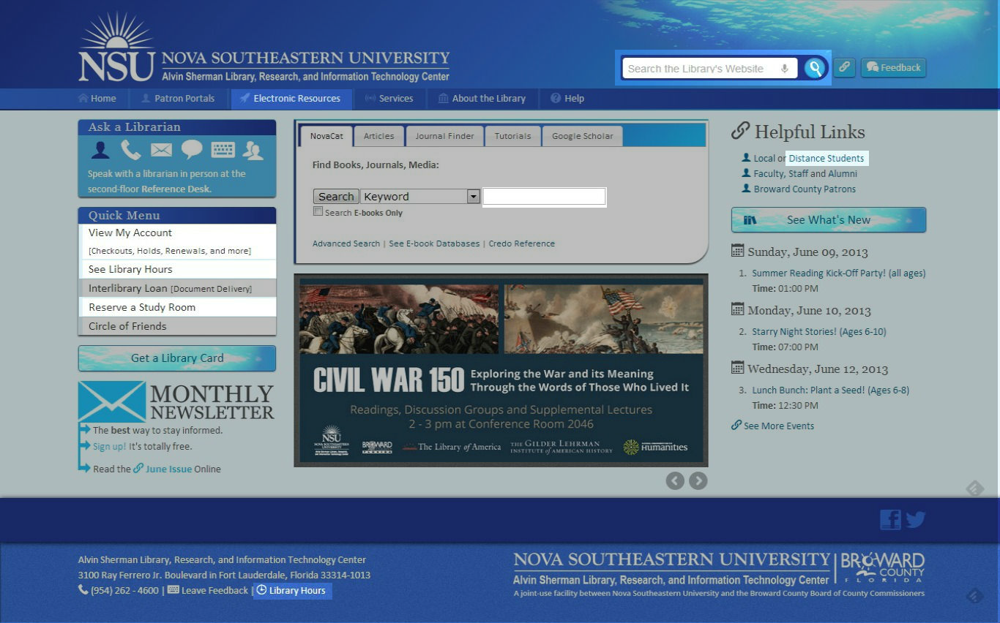

-
Front-End Librarian
Librarian of Web Services at the ASLRITC -
Slides: talks.ns4lib.com
- Hit S for Speaker Notes
- ESC for Overhead View
- Twitter: @gollydamn
- Web for Libraries Weekly:

15.5" Laptop / 1366 x 768
that's about 7 vertical inches


Staying above the fold
requires that we know where the fold is.We can't.
↓
The Antipattern
We can't deny the formative power "the fold" has in a design committee, especially for a library website, which must sometimes be built to the expectations of many stakeholders. There can only be so much on the front page above the fold ...
unless you collapse, float, and cycle through large uncompressed images with javascript.
... anything to make the committee go home, amirite?

<section id="carousel">
<ul class="slides">
<li>
<img src="http://placekitten.com/400/400" alt="A cat!">
</li>
<!-- repeat -->
</ul>
</section>
<!-- Javascript
======================
--> <script src="https://ajax.googleapis.com/ajax/libs/jquery/1.8.2/jquery.min.js"></script>
<script src="scripts/carousel.js"></script>
<script>
$('.slides').startCarousel();
</script>


The convenience of convention, the power [and ease] of jQuery, the wow-factor and high-level professionality associated with a slick animation leads to intuitive leaps of faith that carousels as design-elements actually work.
For whom?
Today's Web
-
3.6M new smartphones every day
- 371k births
-
56% of American adults has one
- 31% use phones for the majority of internet access
- Of course, preference among all age groups is shifting away from desktops and laptops toward mobile devices.
- For 25% of Americans, their phone is their one and only device.
Access Increases
Bandwidth Decreases
-
Average size of a web page: 1.25MB
-
Context: the mean time to load 700KB
- ... from desktop: 6.9 seconds
- ... from phone: 10.2 seconds
- For certain devices, 3MB triggers Error 413 - entity too large
-
Context: the mean time to load 700KB
-
Images responsible for 52-59% of the payload.
- Javascript load time comes in second.
- All the while, 3G and 4G LTE networks are getting slower.
Patrons on ...
Performance
For every 1 second that a page takes to load there is a 65% bounce rate.65%!
Patrons on ...
Performance
71% of people expect mobile sites to load as fast or faster than desktops.71%!
Patrons on ...
Performance
The percentage of users that will abandon your website if it takes more than 4 seconds to load?74%
Performance is a Feature
The Reality of User Engagement
Let's take a moment to get mindblown!

Slideshare
10%
of all books were published last year.380 Billion
photos taken last year in the U.S.822,240
websites created every day4 Billion
things shared on facebook every day90%
of data ever created was created in the past two yearsBrad's point is that
People's capacity for cruft is rapidly diminishing"Banner Blindness"


The Reality of User Engagement
Which part is the content that people care about?

Approximately 1% of visitors click on a feature. ... Of these clicks, 84% were on stories in position 1 with the rest split fairly evenly between the other four (~4% each). Erik Runyon

It didn't come as too much of a surprise that the slide in first position got the most attention, but I wasn't expecting to see such a large skew. The poor slides in position eight were barely ever seeing the light of day. Paul Kelly, University of York

Moving UI
Deadly. Accordions and carousels should show a new panel only when users ask for it. Otherwise, it should stand still and let users read the information in peace, without having the rug yanked from under them. As our user said about Siemens' big rotating box: "I didn't have time to read it. It keeps flashing too quickly." Jakob Nielsen
How Moving UI influences
Accessibility
- A Primer to Vestibular Disorders
- 35% of adults aged 40 years or older in the United States have experienced some form of vestibular dysfunction.
-
The ".08 second sweet spot"
- Low-literacy users, or those for whom English isn't a native language need more time.

The point
is that user-centric libraries must simplify. The summons for a website to be device agnostic demands a simple design. All the conventions that emerged from the fear of the fold--like carousels, complex search widgets, bloated header menus, three or four column cramped designs, font-sizes less than 16px--are detriments, and they'll be increasingly detrimental as desktops are abandoned in favor of smaller devices.
Remember
- Performance is a Feature
-
Users' capacity for cruft is rapidly diminishing.
-
Banner blindness
- Auto-movement feels like an ad
- Choose banner or feature text carefully. Empty content trains repeat-users to look over that element.
- Embrace whitespace.
-
Banner blindness
- Don't sacrifice accessibility for pizzazz
- Patrons pay for library websites.